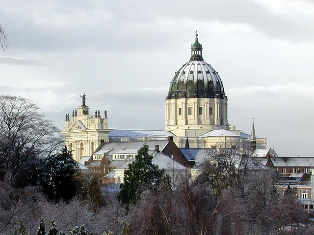
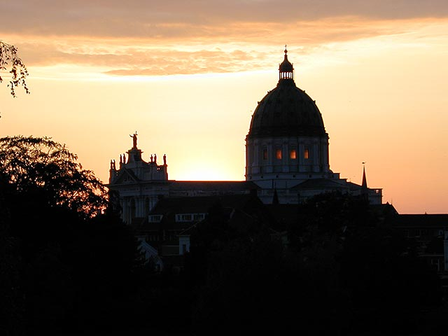

Oudenbosch
I was born and raised in Oudenbosch, a village in the Dutch province of Noord-Brabant with a population of around 12.500. Oudenbosch is most famous for its scaled-down copy of St. Peter's Basilica in Rome, built between 1865 and 1892. The pictures below were taken (not by me, though) in Oudenbosch. Click on the second one to see a similar picture of St. Peter's Basilica in Rome.
